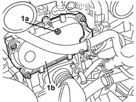

1036L40 mount for seal on camshaft in cylinder head extension complete with coil/s - includes cleaning of mating surfaces sealant application
- Path
- Procedures > 10 ENGINE > 1036 TIMING SYSTEM > 1036L camshaft (2) in top head (1) > 1036L40 mount for seal on camshaft in cylinder head extension complete with coil/s - includes cleaning of mating surfaces sealant application
- Kind
- repair procedure (removal / refitting; the operation number is the code)
- Applies to
- engines: 1.2 16v, 1.4 16v; all production periods
- Interactive page
- https://sloeber94.github.io/elrnDB-lYpsln/en/#/2428997
Applies to: engines: 1.2 16v; all production periods
 Removing
Removing
 Refitting
RefittingProceed with removal 5530B10 battery - r+r .
Proceed with removal 1048A32 sleeve from air cleaner to intake manifold - r + r .
1. Undo the nuts (1a) and remove the camshaft sealing mount (1b), complete with gasket.

Applies to: engines: 1.4 16v; all production periods
Removing
RefittingProceed with removal 5530B10 battery - r+r .
Proceed with removal 1048A32 sleeve from air cleaner to intake manifold - r + r .
1. Undo nuts (1a) and remove the camshaft support (1b) complete with gasket.
Applies to: engines: 1.2 16v; all production periods
Refitting
RemovingRefit the camshaft sealing mount with its gasket and tighten with nuts.
Proceed with refitting 1048A32 sleeve from air cleaner to intake manifold - r + r .
Proceed with refitting 5530B10 battery - r+r .
Applies to: engines: 1.4 16v; all production periods
Refitting
RemovingRefit the camshaft mount with gasket and secure with nuts.
Proceed with refitting 1048A32 sleeve from air cleaner to intake manifold - r + r .
Proceed with refitting 5530B10 battery - r+r .